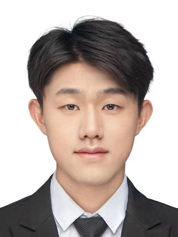

Hanpeng Liu
刘汉鹏
Ph.D. candidate, School of Computer Science and Technology, Huazhong University of Science and Technology (HUST)
I am a final-year Ph.D. student at HUST, advised by Prof. Kun He. I study how to learn visual representations that transfer across vision-language systems: image-text pretraining, CLIP post-training, self-supervised visual pretraining, and vision encoders for multimodal large language models. Since 2024 I have also been a research intern at Li Auto, working on large-scale training of vision and vision-language models.
I will finish my Ph.D. in 2027 and am looking for postdoctoral positions in vision-language and multimodal learning. If you think my work fits your group, I would be glad to hear from you by email.

News
- Sep 2026 Two papers accepted to NeurIPS 2026: ITO on image-text pretraining and ComCLIP on CLIP post-training.
- Mar 2026 iGVLM, on instruction-guided vision encoding for multimodal LLMs, is on arXiv.
- Oct 2025 First-author paper on patch-based self-supervised learning accepted to Pattern Recognition.
- Mar 2025 First-author paper accepted to IEEE Transactions on Big Data; one paper accepted to ICME 2025.
- Sep 2024 One paper accepted to NeurIPS 2024. Started a research internship at Li Auto.
- Feb 2024 Co-first-author paper on efficient vision transformers accepted to CVPR 2024.
Publications
* equal contribution, † corresponding author. Full list on Google Scholar.
Selected
- NeurIPS 2026
-
NeurIPS 2026
Rethinking Contrastive Loss in CLIP Post-training: A Complementary Framework with Frozen Text EncoderShows that forgetting in CLIP post-training is driven by the InfoNCE temperature rather than small batches, and keeps the text encoder frozen so the improved vision encoder drops into LLaVA without re-alignment.
-
Preprint
iGVLM: Dynamic Instruction-Guided Vision Encoding for Question-Aware Multimodal UnderstandingConditions the vision encoder of a multimodal LLM on the user's question, so the visual features adapt to each instruction.
-
CVPR 2024
You Only Need Less Attention at Each Stage in Vision TransformersAn efficient vision transformer that computes self-attention in only a few layers of each stage and reuses it in the rest.
Other papers
-
Pattern Recognition 2025
Boosting the Patch-based Self-Supervised Learning through Past-to-Present Smoothing
-
IEEE TETCI 2025
Class Discriminative Knowledge Distillation
-
IEEE TBD 2025
Residual Learning for Self-Knowledge Distillation
-
NeurIPS 2024
Leveraging Contrastive Learning for Enhanced Node Representations in Tokenized Graph Transformers
-
ECAI 2024
Grouped Logit Distillation Enhanced with Superclass Awareness for Efficient Knowledge Transfer
-
Big Data Research 2024
Knowledge Distillation via Token-Level Relationship Graph Based on the Big Data Technologies
Experience and education
- 2024 – now
Li Auto, research internDistributed training and evaluation for vision and vision-language foundation models.
- 2022 – now
Huazhong University of Science and Technology, Ph.D. studentComputer Science and Technology, advised by Prof. Kun He.
- 2018 – 2022
Huazhong University of Science and Technology, B.Eng.Computer Science and Technology.